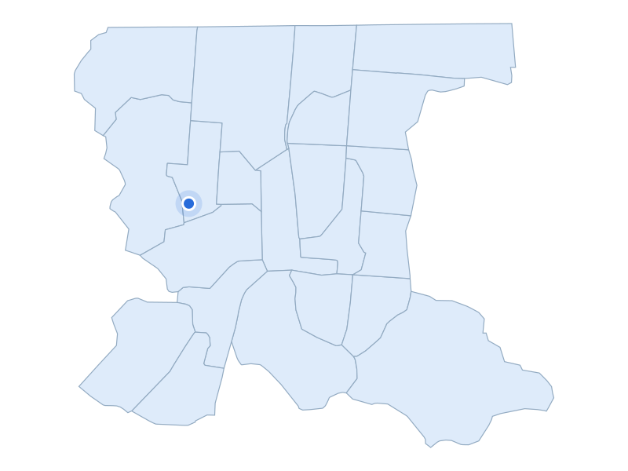

부동산 데이터 | 신혼부부가 사는 곳
거주 수 5위 · 인천 부평구

부평역 외관과 역앞 거리
지역 자료사진 · 촬영 2016 · Public domain
거주 수 상위 5개 구 · 현재 지역
01 소개 예정
02 소개 예정
03 소개 예정
04 소개 예정
05 부평구
10,204쌍
주거 특징·랜드마크
부평구에는 부평역 주변 상업 생활권과 택지개발로 대단위 아파트가 형성된 삼산2동 주거지가 함께 있습니다.
주거 특징·랜드마크
부평역은 수도권 1호선과 인천1호선이 만나는 환승 거점입니다.
거주 수 5위 · 10,204쌍

인천 부평구 · 실제 가격 집계구역
파란 점: 단지 위치
지역 아파트 실거래 중위값
4억 3,000만원
지역 거래 642건
단지 사례
한신휴
3억 9,000만원
단지 거래 9건
2026-05-01 ~ 2026-10-31 계약
전용 83~85㎡ · 아파트 매매 · 취소 제외